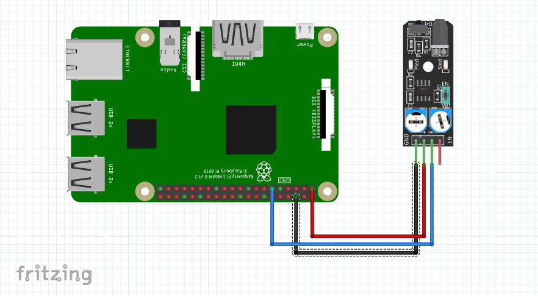

Inicio
Avoid sensor
El avoid sensor funciona parecido al sensor infrarojo, este se encarga de detectar los obstaculos en su camino
import RPi.GPIO as GPIO
avoidance_pin = 17
GPIO.setmode(GPIO.BCM)
GPIO.setup(avoidance_pin, GPIO.IN)
try:
while True:
if GPIO.input(avoidance_pin):
print("Objeto detectado")
else:
print("Sin objeto")
except KeyboardInterrupt:
GPIO.cleanup()

Realizado por Christopher Eduardo Barrientos Guerra